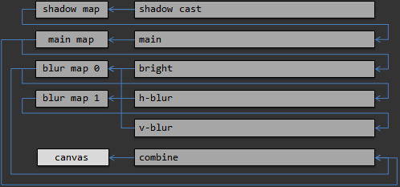
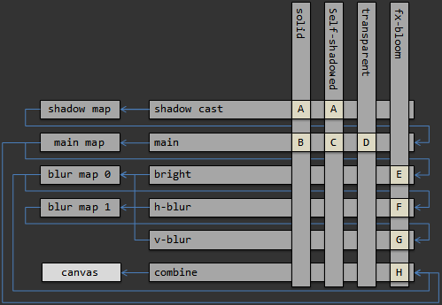

DeviceFirst of all, create device object around a canvas. Device holds all entities and represent stage-material grid. You can also specify output color & depth formats and WebGL context attributes (see the reference page). When you resize linked canvas, device triggers resize event. If the WebGL context is lost, the device will trigger lose event. When it is restored, the device will trigger restore event and restore all entities automatically. There is a set of capabilities that vary with different hardware (like compressed & float textures, anisotropic filter, etc). You can check it using Caps structure: The frame method performs a frame and returns information about execution. MeshMesh contains vertices and indexed primitives and provides interface around it. To create a mesh, use following maker method: Mesh supports only interleaved vertex data. You need to specify the vertex format via attributes. There is a set of attribute types and commonly used aliases (which can be used in some calculations). Then you can upload vertex data to the mesh from an array (JS or Typed). Alternatively, you can allocate a number of vertices that you need. In this case the vertex data will be initialized by zero values. If you want to update vertices repeatedly, it's highly recommended to use DYNAMIC flag to avoid performance penalty. Then update your vertices. Use the same approach to work with indices. Also you can specify a type of primitive which will be drawn. TextureTexture provides interface over a set of mip levels. There are two ways to create a texture: from parameters and from HTML objects (see the reference page). To get specified mip level, use the following method: You can upload arbitrary data (array or HTML object) to any mip level via source method: Also you can generate full mip level chain from the largest mip level: To create cubemap you just need to set cube face count argument to CubeFace.COUNT. If you use cubemaps, you need to specify a cube face when you access to a mip-level: DepthDepth object represents a depth-stencil buffer. It can be used to write depth from the fragment shader and also to read it via sampler (if it's supported by your hardware). TargetTarget represents a rendering output (color and depth) for a stage (see next section). You can construct a target from existent color and depth objects or from parameters. It's also possible to draw to multiple color targets (if your hardware supports it). You can clone your target to a new one and specify scale factor. The device holds a specific type of target which wraps the canvas. If you want to draw directly to the display area, you need to use that target. StageStage separates the rendering process within the frame. Stage executes to the target object. For each stage you can setup view/projection matrices, viewport & scissor rects, depth range and cleanup parameters. It's possible to implement any complex rendering pipeline via stage grid. There is an example of pipeline that uses shadow mapping and some post processing: For simplicity, the "map" means a texture and a depth buffer wrapped into a target. A stage draws to the target and then the texture from the target is used as uniform value (see uniforms section) for another stage. There is a code snippet of the example: PassPass defines a rendering configuration (shaders, samplers, states). You can create a pass from vertex & fragment shaders and an array of shader macro (optionally): Also you can recompile existent pass with new shaders & macros: It extracts vertex attributes from the vertex shader and generates bindings. And so you can draw any mesh by any pass. It also extracts information about all uniforms from both vertex and fragment shaders. For each texture uniform you can configure sampler: There is a set of rendering states which you can change. For example: MaterialMaterial describes a rendering method that can be applied to an instance. It defines a set of passes for the stage grid. There is an example of using materials in the pipeline which was described above. Some names of materials in this example has technical meaning (for better understanding). Normally you should use more natural names such as "glass", "copper", "wood", etc. Associated passes is executed from left to right and from top to bottom. And so if you want draw one material before another you need to add it first. InstanceInstance is the elementary unit of rendering. It represent a transformed mesh and material. You can transform the instance by matrices or you can use named methods. To remove the instance from the draw use free method: UniformsDevice, Stage, Material and Instance provide the uniform interface. Uniforms override each other so you can use default values: Some objects provide uniform placeholders. If you set it as uniform's value it will apply some internal value automatically. CullingThe project implements the frustum culling approach. If you want to use it you need to set bounds for your meshes or compute it from the POSITION attribute. An instance derives mesh's bounds and transform it by instance's transformation matrix. Stage's view-projecting matrix will be used to compute frustum planes. You can also disable frustum culling in the instance or the whole stage respectively. |
TABLE OF CONTENT: |